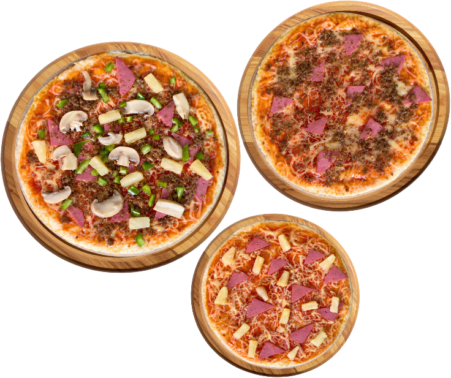
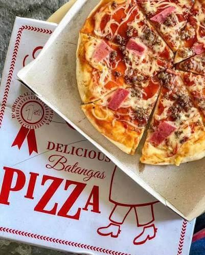
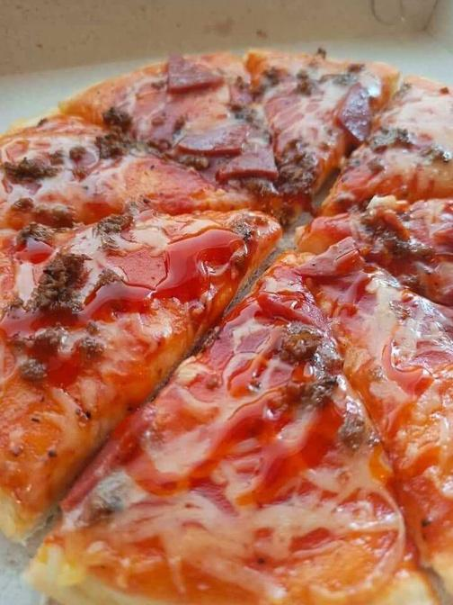

TARA PIZZA
BREAK MUNA!
For over three decades, the Batangueños have consistently brought home a family favorite pasalubong: the Batangas Pizza. A classic sweet-style pizza loaded with savory toppings and melted cheese. It’s a local classic that remains a staple at every family table.



Batangas Pizza started in 1993 as a small stall on D. Silang Street. People stopped by after grocery shopping at Citimart and took a box home to the family. Cheap, fast, and easy to carry.
Our bakers made a recipe for Filipino tastes: sweet tomato sauce and soft bread dough. One stand on D. Silang Street grew into stalls in Poblacion, San Pascual, and Quezon Residences 3. Place your order and your pizza goes straight into the oven.
SOLD ONLY AT OUR STALLS.
There are no dine-in restaurants for Batangas Pizza. Right from 1993 up to now, we only sell from small stalls where you buy a box and bring it home as pasalubong or as an afternoon snack.


AVAILABLE ON ANY DEVICE
Browse the menu and order from any screen!